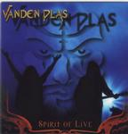

| Artist: | Vanden Plas |
| Title: | Spirit Of Live |
| Label: | Inside Out IOMCD068 |
| Length(s): | 73 minutes |
| Year(s) of release: | 2000 |
| Month of review: | 10/2000 |
| 1) | I Can See | 4.26 |
| 2) | Into The Sun | 7.05 |
| 3) | Soul Survives | 9.52 |
| 4) | How Many Tears | 10.37 |
| 5) | Don't Miss You | 3.50 |
| 6) | Journey To Paris | 3.08 |
| 7) | Spirit Of Life | 4.28 |
| 8) | Iodic Rain | 6.11 |
| 9) | Far Off Grace | 9.51 |
| 10) | Kiss Of Death Feat. Don Dokken | 5.28 |
| 11) | Rainmaker Feat. Patrick Rondat | 8.38 |